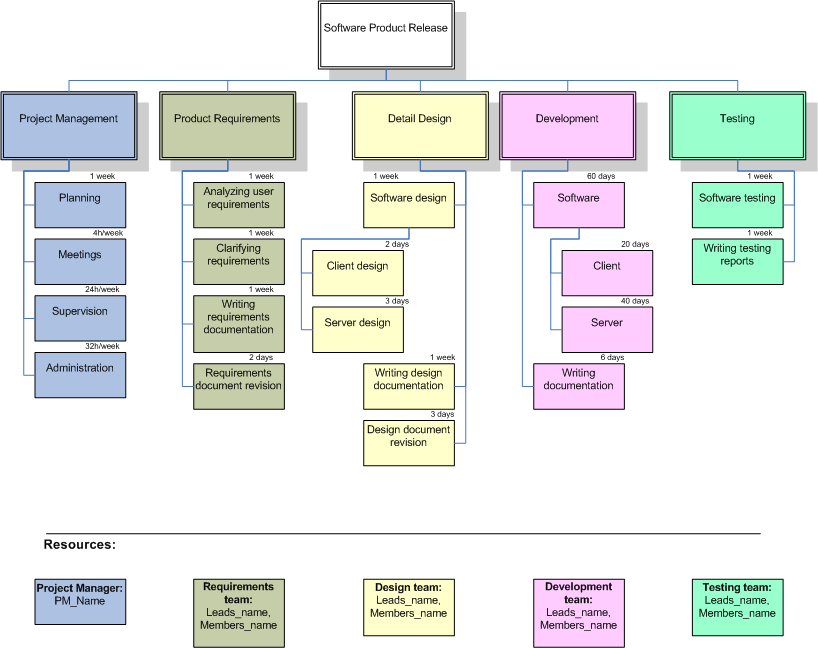
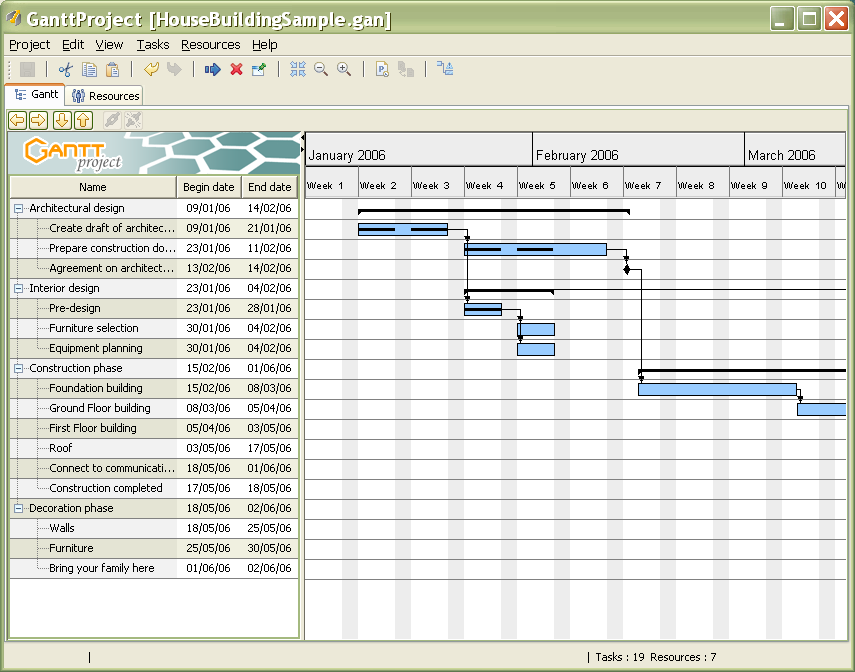
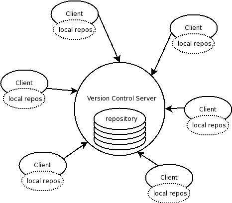
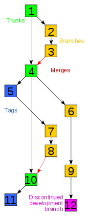

Laborator 3 - Mijloace de organizare a proiectului. Controlul versiunii
Software Design Document (SDD)
document de specificație a soluției pentru sistemul software descris în SRS
răspunde la întrebarea: cum va fi construit sistemul software pentru a avea comportamentul descris în SRS?
prezinta metodologii, tehnologii, participanți și resurse implicate în proiect
se poate redacta numai după finalizarea SRS-ului fiind un răspuns la cerințele prezentate în SRS
este redactat de o echipă de software designers (proiectanți de sistem) și analiști business, pe baza SRS-ului și a experienței acestora
reprezintă ghidul de construire a soluției folosit de echipa de dezvoltare a proiectului
reprezintă un tool de analiză a întregului proiect în faza de început cât și de monitorizare pe parcurs
Secțiuni SDD
Un SDD are următoarele secțiuni:
Modelul datelor (Data Design)
prezintă structurile de date importante, formatele fișierelor folosite în cadrul soluției și schema bazei de date.
Structurile de date pot fi:
globale (structuri de date disponibile tuturor componentelor arhitecturii)
de legătură (structuri de date trimise ca argumente între componente pentru a asigura fluxul informației la nivel de aplicație)
temporare (structuri de date folosite temporar).
Schema bazei de date este descrisă prin:
diagrama schemei bazei de date
descrierea semnificației tabelelor și, pentru fiecare tabelă, descrierea semnificației coloanelor și indicarea cheilor primare și referențiale.
Modelul arhitectural (Architectural Design)
este o structură ierarhică alcătuită din componente interconectate
prezintă arhitectura sistemului – atât descriptiv, cât și sub forma unei diagrame de arhitectură
descrie:
fiecare componentă a arhitecturii,
restricțiile de implementare ale componentelor,
interacțiunea dintre componentele sistemului.
poate fi reprezentat prin :
diagrame de componente (pentru proiecte mari) - le-am numit “generic” în laboratorul 2: diagrame de arhitectură
diagrame de clase, în care relațiile ierarhice se bazează pe generalizare și specializare (pentru proiecte mici).
Modelul interfeței cu utilizatorul (User Interface Design)
Elementele de testare (Testing Issues)
identifică componentele critice ale aplicației (componente a căror performanță influențează decisiv performanța globală a aplicației)
propune alternative de proiectare a componentelor critice (pentru a fi folosite în cazul insuccesului soluției propuse inițial).
Conținutul unui SDD
Scopul documentului (Document purpose)
Obiective (Objectives)
Conținutul documentului (Document overview)
Modelul datelor (Data Design)
Structuri de date globale (Global Data Structure)
Structuri de date de legătură (Linking Data Structure)
Structuri de date temporare (Temporary data structure)
Formatul fișierelor utilizate (File Formats)
Descrierea bazei de date (Database description)
Modelul arhitectural și modelul componentelor (Architectural and component-level design)
Arhitectura sistemului (System Architecture)
Descrierea componentelor (Component Description)
Restricțiile de implementare (Implementation Requirements)
Interacțiunea dintre componente (Component Interaction)
Modelul interfeței cu utilizatorul (User Interface Design)
Elemente de testare (Testing Issues)
Exemplu de Document SDD
În managementul de proiect, există o serie de utilitare de organizare a lucrului în proiecte, precum:
WBS (Work Breakdown Structure)
structură arborescentă cu rolul de a determina și de a grupa sarcinile proiectului în funcție de categoria din care fac parte
ajută la organizarea proiectului prin clarificarea obiectivelor, a elementelor de lucru mai generale (work packages) și mai specifice (work elements)
pe baza WBS, se pot face estimări de durată, de resurse umane și de buget → suport pentru construirea diagramei Gantt
ajută la identificarea relațiilor de precedență dintre elementele de lucru (care elemente de lucru sunt independente, care sunt restricționate să aibă loc înainte de altele, etc.) - elemente vizibile în diagrama Gantt.
WBS reprezinta graful acțiunilor necesare unui proiect grupând acțiunile în categorii de interes
oferă suport pentru identificarea tuturor acțiunilor necesare și prioritizarea lor în funcție de efort, cost, durată etc.
Modul de construire a WBS
nodurile arborelui conțin elementele de lucru, care pot fi produse, date, servicii
rădăcina arborelui coincide cu obiectivul proiectului: sistemul software de dezvoltat
nivelul al doilea al arborelui: subsistemele componente ale sistemului
tot așa în adâncimea arborelui, în sensul că orice nod părinte înseamnă un element de lucru general, iar copiii reprezintă elemente de lucru componente ale lui
deci, se detaliază efortul de dezvoltare a proiectului, de la obiectivul general la elemente de lucru și sarcini practice.
nivelul de detaliere al unui WBS nu este foarte ridicat; astfel, adâncimea arborelui nu depășește, adesea, mai mult de 4-5 niveluri.
Reguli
un WBS trebuie să cuprindă prin elementele sale tot efortul necesar dezvoltării proiectului (100% din muncă)
elementele de muncă de pe același nivel din arbore nu se acoperă total sau parțial (nu sunt overlapping)
frunzele din arbore au adesea asociate resurse, durate și costuri.
Exemplu de diagramă WBS a unui proiect software:

Grafic Gantt
grafic pentru planificarea temporală a sarcinilor proiectului
construit pe baza activităților identificate în WBS
indică data de început și de sfârșit a activităților din WBS și dependențele dintre activități:
start-to-start
finish-to-start
finish-to-finish
întotdeauna se va ține cont de potențialele întârzieri și vor incluse în planificare sub o formă sau alta (review, delay, etc.)
graficul Gantt este unul orientativ și starea sa se poate altera în timpul proiectului în funcție de situație
acțiunile în grafic sunt trecute ca începand cel mai curând posibil, urmând să se asigure o marjă de eroare până la momentul cel mai târziu posibil
este un tool bun pentru monitorizarea stării proiectului în timp, în funcție de gradul de realizare a acțiunilor până la un moment dat
adesea, conține și următoarele elemente:
o linie verticală ce marchează timpul prezent
alte linii verticale cu milestone-urile proiectului
starea activităților exprimată prin procente (100% înseamnă că activitatea a fost realizată complet).
Organizarea unui proiect înseamnă parcurgerea etapelor:
Determinarea activităților proiectului (WBS)
Estimarea duratelor activităților și a consumului de resurse (astfel încât costul total să fie mai mic decât bugetul alocat)
Planificarea activităților în funcție de dependențe și de eventualele restricții legate de resurse (Gantt)
Stabilirea de milestone-uri.
Exemplu de diagramă Gantt a unui proiect de construcție de casă:

Milestone
deadline de finalizare a unei etape importante și decisive a proiectului
adesea, presupune predarea unor livrabile către beneficiar
în vederea respectării milestone-urilor fixate, adesea se impune luarea unor decizii cu impact major asupra evoluției proiectului.
deși reprezintă puncte cheie în cadrul unui timeline, din varii motive acestea pot fi decalate dacă acest lucru ajută și nu au un impact negativ asupra proiectului.
Controlul versiunii (Git)
Sisteme pentru contolul versiunii (Version Control Systems - VCS - sau Source Code Management - SCM) sunt aplicații care permit lucrul colaborativ pe diverse fișiere, în special fișiere cod sursă. Sistemele pentru controlul versiunii sunt practic obligatorii în cadrul unui proiect cu dezvoltatori multipli. Astfel de sisteme rețin istoricul modificărilor efectuate de fiecare dezvoltator și folosesc comenzi specializate care să faciliteze transmiterea acestor modificări între dezvoltatori.
Exceptând sistemele de gestiune a surselor, prezentate mai detaliat în continuare, și alte aplicații folosesc versiuni:
Wiki Engines - pentru fiecare modificare se rețin doar schimbările de la versiunea anterioară; orice modificare poate fi anulată;
Google Docs - versiuni pentru fiecare modificare;
MS Office, OpenOffice - permit atașarea unor numere de identificare pe documentele editate.
Principiul de funcționare a sistemelor de gestiune a codului este comun:
Sursele sunt păstrate, de obicei, într-un repository (depozit) aflat pe un server accesibil tuturor dezvoltatorilor. Acest repository constituie mecanismul principal de sincronizare a surselor dezvoltatorilor.

Fiecare dezvoltator obține o copie a repository-ului, denumită copie locală. Copia rezidă pe sistemul dezvoltatorului. Dezvoltarea se va realiza în acest director.
Există două operații care permit comunicația cu repository-ul:
update sau pull înseamnă actualizarea copiei locale cu informațiile din repository; este posibil ca alți dezvoltatori să fi comis schimbări în repository;
commit sau push înseamnă transmiterea/comiterea modificărilor locale în repository; ceilalți dezvoltatori vor folosi comanda update pentru actualizarea copiei locale cu acele informații.
Câteva cuvinte cheie utile în lucrul cu sisteme de control al versiunii sunt (denumirile sunt în engleză pentru că aceasta este forma uzuală de utilizare):
repository locul (centralizat) în care se găsesc sursele și informațiile de modificare;
working copy copia locală a repository-ului folosită de un dezvoltator;
check-out operația de creare a unei copii locale pornind de la repository (clonarea repository-ului);
commit (vezi mai sus)
update (vezi mai sus)
branch o ramură de dezvoltare (un fork) care poate fi dezvoltată în paralel față de ramura principală de dezvoltare (vezi
imaginea de mai jos);
-
tag o referință la un snapshot al surselor la un moment dat în timp;
merge o operație de unificare a două seturi de schimbări petrecute distinct;
conflict situație în care două modificări sunt efectuate din surse diferite și sistemul nu poate găsi o soluție de unificare (merge) a acestor schimbări; dezvoltatorul va trebui să rezolve conflictul fie prin unificarea schimbărilor, fie prin selectarea unei singure variante

Există două tipuri de sisteme pentru gestiunea codului sursă:
Detalii despre diferențele dintre acestea (mai degrabă între doi dintre cei mai cunoscuți reprezentanți, Subversion și Git) găsiți aici sau aici.
Git
Git este unul dintre cele mai folosite sisteme de versionare distribuite. Cele mai importante concepte din Git sunt următoarele:
repository - există un repository remote și oricâte repository-uri locale
commit - conținut modificat
branch - lanț de commit-uri
La începutul dezvoltării unui proiect folosind Git sunt necesare câteva configurări:
numele, adresa de e-mail, editorul utilizat pentru mesajele de commit
$ git config --global user.name "Andrei Maruseac"
$ git config --global user.email "andrei.maruseac@gmail.com"
$ git config --global core.editor "vim"
Dacă nu este folosit argumentul –global, configurările sunt făcute doar pentru repository-ul curent.
tipuri de fișiere care nu vor fi comise prin crearea unui fișier .gitignore. Un exemplu de astfel de fisier este:
$ cat .gitignore
*~
*.swp
*.swo
*.o
*.obj
*.a
*.so
*.dll
*.lib
*.gz
*.bz2
*.zip
Fișiere .gitignore specife limbajului de programare folosit puteți găsi pe GitHub.
Comenzile Git folosite uzual în dezvoltarea proiectelor sunt:
man git-$comandă, man gittutorial - pagini de manual pentru Git
git init - inițializarea unui repository
git clone - clonează un branch într-un director nou
git fetch - preia commit-urile care nu există în repository-ul local
git merge - integrează modificările din două branch-uri
git pull - efectuează operațiile fetch și merge între branch-ul specificat și cel curent
git status - arată ce fișiere au fost modificate de la ultimul commit și ce fișiere se află în staging area (se vor comite la comanda git commit)
git add - adaugă fișiere în staging area
git commit - comite modificările din staging area
git branch - afișează toate branch-urile existente
git checkout - dacă primește ca argument un branch, acesta devine branch-ul curent; dacă primește un nume de fișier ca parametru, se renunță la modificările de la ultimul commit din acest fișier
git push - trimite modificările în repository-ul global
git log - arată istoricul commit-urilor din branch-ul curent
git diff - arată modificările față de un anumit commit sau între două commit-uri
git format-patch - realizează patch-uri din ultimele commit-uri pentru a putea fi trimise prin e-mail
git am - aplică patch-uri în branch-ul curent
Exerciții
Trebuie să vă împărțiți în echipe de câte 6-8 persoane (2 echipe pe grupă). Veți lucra la
proiectul 1 în această echipă în următoarele 4 săptămâni.
Cunoaștere: persoană și capacități (30 de minute)
10 minute discutați în cadrul echipei despre fiecare dintre voi, atât la nivel de persoană cât și ce competențe tehnice posedă.
În prima rundă, fiecare membru al echipei va scrie pe o bucată de hârtie (maxim A5) 5 cuvinte care să îl/o descrie, fără a avea spune nimic fizic (aspect, localitate, grupă din care face parte); doar aspecte de personalitate și comportament. Apoi hârtiile ajung la asistent, care le citește pe rând și apoi fiecare persoană va scrie despre cine crede că este vorba. După citirea tuturor membrilor echipei se va verifica dacă fiecare membru al echipei a știut despre cine este vorba.
În a doua rundă, se petrec aceleași lucruri, doar că fiecare membru al echipei va scrie 5 cuvinte care să îl/o descrie acea persoană din punct de vedere tehnic (tehnologii, stil de lucru, limbaje de programare, sisteme de operare, materii preferate). Nu loc de muncă.
Git (20 de minute)
Porniți în Linux și parcurgeți tutorialul Git Immersion. Realizați primele 9 laboratoare din tutorial.
Dacă nu aveți instalat Git sau Ruby, din contul utilizatorului root instalați folosind apt-get install git ruby rake.
Lucru la proiect (40 de minute)
În echipă gândiți-vă cum veți aborda proiectul. Puteți folosi hârtie fizică, un fișier .txt sau .doc/.odt, un document Google sau o pagină wiki sau puteți trimite pe e-mail primele idei. Urmăriți:
Ce soluții software vă propuneți să utilizați?
Ce arhitectură de proiect urmăriți (în linii mari)?
Care sunt responsabilitățile macro în cadrul echipei?
Care este planul pentru următoarea săptămână (ce aveți de făcut fiecare)?
Care este agenda următoarei întâlniri de proiect (din laboratorul următor)? Dau dacă planificați o întâlnire înainte de următorul laborator.
Ce veți folosi pentru comunicare/colaborare?
Să puneți la punct de pe acum resursele pe care le veți folosi.
Nu vă recomandăm să vă gândiți acum la un timeline al celor patru săptămâni de lucru la proiect, dar ar trebui să-l aveți în vedere în următoarele zile ce să știți:
În limita timpului parcurceți și exercițiile de mai jos.
Opțional: GitHub (20 min)
Dacă aveți timp faceți și acest exercițiu.
Realizați următoarele tutoriale de pe GitHub:Set up git, Create A Repo și primii 2 pași de aici: Fork A Repo. Creați un branch nou, mutați-vă pe acesta, faceți o modificare, și comiteți modificarea. Realizați un patch cu modificarea respectivă, mutați-vă pe branch-ul inițial, și aplicați patch-ul. Trimiteți modificarea pe repository-ul central (fork-ul vostru de pe GitHub).
{kind=link}
{kind=link}
{kind=link}
{kind=link}
{kind=link}